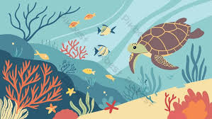

DESCRIPTION
Welcome all the audience !
I tried my best to let you know about oceanograpfy as far as I got to nkow about it.
Well if you want me to change anything OR corect me please do let me know by the email ID given at the end of this page.
ABOUT

Oceanography, also known as oceanology,sea science,ocean science,and marine science , basically it is the scientfic study of the ocean, including its physics, chemistry,biology, and geology.
Oceanography is the scientific study of the oceans, their composition, movements, organisms, and processes. It encompasses a wide range of topics, including:
Marine Biology
Physical Oceanography
Chemical Oceanography
Marine Geology
Ocean Circulation
Ocean Acidification
Marine Ecosystem
Marine Biology

Marine biology is the scientific study of the biology of marine life, organisms that inhabit the sea. Given that in biology many phyla, families and genera have some species that live in the sea and others that live on land, marine biology classifies species based on the environment rather than on taxonomy.
A large proportion of all life on Earth lives in the ocean. The exact size of this "large proportion" is unknown, since many ocean species are still to be discovered. The ocean is a complex three-dimensional world,[1] covering approximately 71% of the Earth's surface. The habitats studied in marine biology include everything from the tiny layers of surface water in which organisms and abiotic items may be trapped in surface tension between the ocean and atmosphere, to the depths of the oceanic trenches, sometimes 10,000 meters or more beneath the surface of the ocean. Specific habitats include estuaries, coral reefs, kelp forests, seagrass meadows, the surrounds of seamounts and thermal vents, tidepools, muddy, sandy and rocky bottoms, and the open ocean (pelagic) zone, where solid objects are rare and the surface of the water is the only visible boundary. The organisms studied range from microscopic phytoplankton and zooplankton to huge cetaceans (whales) 25–32 meters (82–105 feet) in length. Marine ecology is the study of how marine organisms interact with each other and the environment.
Physical Oceanography

Physical oceanography is the study of the ocean's physical properties and processes. It includes the study of ocean currents, waves, tides, temperatures, and densities.
What do physical oceanographers study?
How the ocean interacts with the atmosphere, seafloor, and coastlines
How energy is transferred through the ocean and across its boundaries
How the ocean influences the climate of the atmosphere
How water mass forms and moves
How the ocean mixes internally and at the surface
It conduct fieldwork, Use numerical modeling, Develop design and operational criteria for marine structures, Use remote sensing, and Conduct experimental work in laboratories.
Chemical Oceanography

Chemical oceanography is the study of the chemical composition of the ocean and how it interacts with the atmosphere, seafloor, and marine life. It's also known as marine chemistry or ocean chemistry.
What do chemical oceanographers study?
How the chemical composition of the ocean changes over time
How the chemical composition of the ocean affects the ocean's ecology and biology
How the chemical composition of the ocean affects the reactions between seawater, the atmosphere, the seafloor, and marine organisms
How human activities, like industrial processes and leaded gasoline, affect the chemical composition of the ocean
elated fields
Marine geochemistry:
The chemistry of rocks and sediment on the seafloor
Sediment geochemistry:
Chemical reactions in the ocean, especially in ocean sediments
Marine Geology

Marine Geology focuses on areas affected by our oceans including the deep ocean floor, the shallower slopes and shelves that surround the continents, and coastal areas like beaches and estuaries.
Marine geology is the study of the ocean floor, coastal areas, and the slopes and shelves around continents. Marine geologists study the ocean's potential for energy and mineral resources, and the environmental impact of extracting these resources.
Scope of marine geology
Ocean floor: Marine geologists study the ocean floor for mineral deposits like polymetallic nodules and methane hydrates.
Coastal areas: Marine geologists study coastal areas like beaches and estuaries.
River areas: Marine geologists study some coastal river areas.
Lakes:
Marine geologists study some large lakes.
Ocean Circulation

Ocean Circulation is the large scale movement of waters in the ocean basins.
It is a key regulator of climate by storing and transporting heat, carbon, nutrients and freshwater all around the world.
Thermohaline circulation or the global oceanic conveyor belt is a deep ocean 0circulation pattern that cycles water throughout all 5 major oceans and back.
Thermo- means heat and -haline is related to salt.
Colder, saltier water sinks to the bottom while warmer, fresher water rises to the top to replace it.
Ocean Acidification

Ocean acidification is the process of seawater becoming more acidic due to the absorption of carbon dioxide (CO2) from the atmosphere. This process is caused by human activities such as burning fossil fuels and deforestation.
How does it happen?
When CO2 dissolves in seawater, it creates carbonic acid, a weak acid that releases hydrogen ions.
This increases the concentration of hydrogen ions, which makes the water more acidic.
This also makes carbonate ions less abundant, which are a building block of structures such as sea shells and coral skeletons.
What are the effects?
It makes it difficult for marine calcifying organisms, such as coral and some plankton, to form shells and skeletons.
It can also dissolve existing shells.
It can threaten food chains linked with the oceans.
Marine Ecosystem
A marine ecosystem is a large aquatic environment with high salt content that includes the ocean, coastal areas, and other bodies of water.
Features
Biotic factors:Plants, animals, and microbes
Abiotic factors:Sunlight, oxygen, nutrients, temperature, depth, and proximity to land
Ecosystems: Coral reefs, mangrove swamps, salt marshes, seagrass beds, sand beaches, and dunes
Zones: Euphotic, dysphotic, and aphotic zones based on light availability
Services
Ecological: Climate moderation, nutrient cycling, waste treatment
Economic:> Food, pharmaceuticals, transportation, recreation, oil, and natural gas
Threats
Sedimentation
Sediment from rivers, streams, and land clearing can smother the seabed and kill creatures
Loss of light
Sediment can make water cloudy, which can affect aquatic plants and visual predators
Conservation
Large marine ecosystems: Working together to improve ecosystem health, sustainable use, and human well-being
Marine habitat protection: Protecting habitats and their inhabitants
Sustainable fisheries: Managing fisheries sustainably.